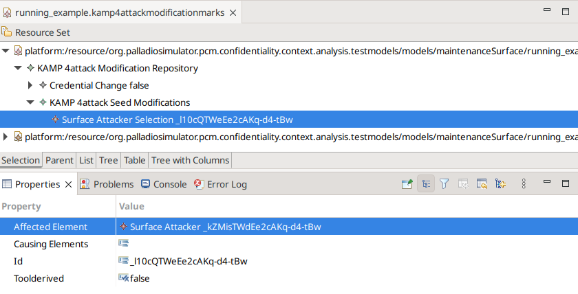
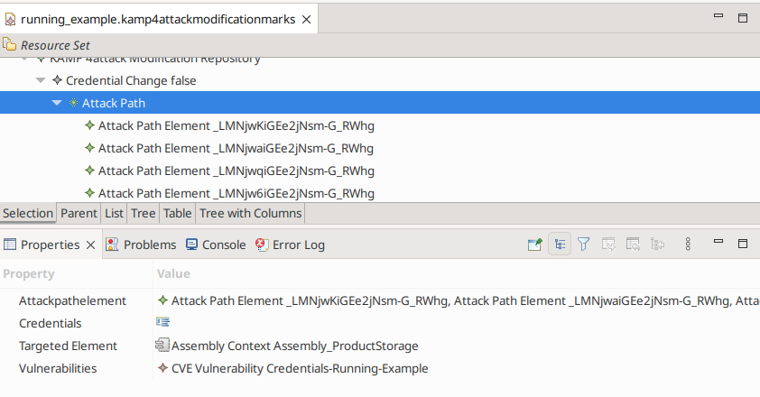

Analyzing Targeted Attack Paths
Scientific Background
The basic idea of our analysis is to identify attack path targeting an component. We realize this behaviour by transforming the software architecture in an attack graph. Based on the attack graph, the analyzis then identifies attack path leading to the selected target. During the path finding, our analysis supports multiple filter operations to select the relevant attack path. More information regarding the scientific background can be found in our publication [WH23].
Analysis Model Input
Before an analysis can be executed, the software architect has to model the software architecture and the security properties (see Modelling Access Control Properties, Modeling Attackers & Vulnerabilities, Palladio). For this analysis, we need the specific attacker models for the targeted attack graph analysis. The attack and attacker for the attack propagation analysis are not required. After the modeling, the software architect needs to select the relevant attacker. This selection is specified in the kamp4attackmodificationmarks model.
{kind=link}
The sceenshot illustrates the attacker selection. The attack is specified in the Seed Modification and there by creating an Surface Attacker Selection element. The element is then selected in the Properties view (lower half) by selecting an Surface Attacker as affected element. In case of a new model, the Seed modification may need to be manually created. This can be done similar to creating other elements in an EMF tree editor by a right click on the parent container and selecting New Child.
Analysis Execution
The analysis can be started via an Eclipse launch configuration. The launch configuration name is Attackeranalysis. It can be created in Eclipse by clicking Run->Run Configurations. This opens a dialog similar to the example image below. There Attackeranalysis can be selected (right side). There you can create a new launch config. Now please select as analysis type Attack surface and select the correct models. For the analysis, we need the Repository Model, Allocation Model, Context Model, Attacker Model, and Modification Model. The model can be selected either as reference from the workspace (recommended) or from the file system.
Analysis Results
The results are stored in the kamp4attackmodificationmarks model. There select the Credential Change and then the found attack paths are listed. Each attack path has its own element and contains compromised elements within the path. A overview is shown in the following screenshot.
{kind=link}